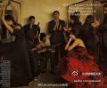

//@贡波措-海地车:现在都是独生子女，一家一个没什么对比性。我家哥仨，大哥超内向，见生人没话，二哥超外向，眼里没有生人，我是挺外向话痨吧？比不上我二哥，更比不上我妈。我妈很能干也很能张罗，我应该算随上了点儿，可我大哥能干但不会张罗，我二哥只张罗从不干活。所以这性格吧，很难总结@Ada李力:姣姣不太爱说话，有时候受了委屈都不说出来，我以为是性格的缘故。今天道听途说得知一家长评论：“姣姣妈妈太能说了，孩子怎么都说不过她，于是干脆就不说了”。
工资内幕都报出来了，看评论当然欢乐。//@仨豆儿: 一张嘴就是Larry自家人的口气，似乎进了O记就是人生顶点了，醒醒啊！//@马小胖童鞋: 这个评论我喜欢，尤其前半部分不解释，哈哈。这条微博看评论很欢乐//@不加V的凯文:对手挖走的人都是些有经验和社会阅历的人，你说的这点点道理会不懂？作为公司招---:抱歉，此微博已被作者删除。查看帮助： 网页链接
有气势//@麻辣情医吴迪: 中国女人的青春短，20岁还不懂做女人青涩得一塌糊涂，26岁就觉得自己老了；一大半原因是中国男人的低劣品味，亲耳听见男人叫35岁女人“老太婆”，而这些男人自己也是早早衰老了，40岁就以成功自居挺着大啤酒肚YY 20岁女人，钱和权是他们最好的春药，一旦失去就沦为性无能@麻辣情医吴迪:昨天我跟拉丁教练@王劭宾Robin 学习斗牛舞，要把大裙摆甩起来，有很多弗拉明戈的元素，超帅！跟我做过心理咨询的女人说，看到你跳舞，就好像一朵花在绽放。说得很好，那么你绽放过吗？你26岁就叫自己剩女，你34岁就管自己叫老女人守在死亡婚姻里？看着我，我比你们大那么多，我可以绽放，你就不能？ 
//@逍遥子3442: 一再听到男人、女人互相指责、谩骂 ，有没有人反思过，男人为何以金钱和权利作所谓的春药？不是女人最关注和赞赏鼓励的吗？高富帅，是男人喜欢的吗？//一大半原因是中国男人的低劣品味，40岁就以成功自居挺着大啤酒肚YY 20岁女人，钱和权是他们最好的春药，一旦失去就沦为性无能@麻辣情医吴迪:昨天我跟拉丁教练@王劭宾Robin 学习斗牛舞，要把大裙摆甩起来，有很多弗拉明戈的元素，超帅！跟我做过心理咨询的女人说，看到你跳舞，就好像一朵花在绽放。说得很好，那么你绽放过吗？你26岁就叫自己剩女，你34岁就管自己叫老女人守在死亡婚姻里？看着我，我比你们大那么多，我可以绽放，你就不能？
受教了。我业余时间和一些妈妈做“快乐营地”活动，就是为了培养孩子交友，表达与合作能力。//@C武春雷:我赞同这家长的观点。我们做家长的除了教育，要做到聆听。鼓励孩子有自己的观点，并有效地组织表达出来，这将使她终生受益。育儿的核心是：我们培养的是一个社会元素，而不是我们自己的荣耀:@Ada李力:姣姣不太爱说话，有时候受了委屈都不说出来，我以为是性格的缘故。今天道听途说得知一家长评论：“姣姣妈妈太能说了，孩子怎么都说不过她，于是干脆就不说了”。
一位二年级小男生用“喜欢...更爱...因为...”造句，他写了“我喜欢钟XX, 更爱陆XX....” 钟XX, 陆XX都是他的同班女生。语文老师给造句打了个叉。后来小男生改成：“我喜欢英语，更爱数学......”。我觉得吧，后面改正过的句子倒是乏味多了。
从心里层面：文人相轻在IT行业比较严重，国内企业，大家自觉技术差不多，用了别家的开源产品，貌似说明自己的技术不行，心里关口过不去。大家认可国内技术与国外技术的差距，用国外的开源产品，倒没有这个负担。---:抱歉，作者已设置仅展示半年内微博，此微博已不可见。
从传播角度：开源产品被大家了解使用，需要必要的文档和适度的宣传。国外很多开源社区的发展，离不开核心人物超强的传播能力。传播需要核心技术人员具备很好的口头和书面表达能力。国内的开源社区这方面较缺乏。---:抱歉，作者已设置仅展示半年内微博，此微博已不可见。